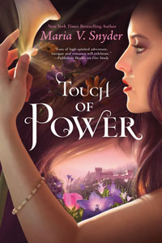
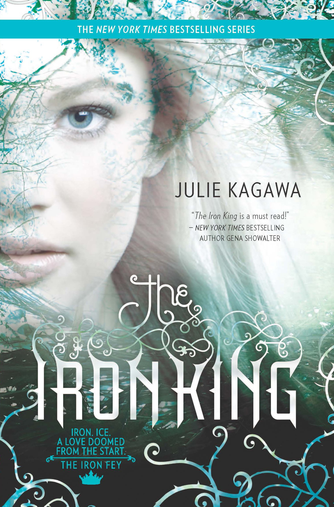
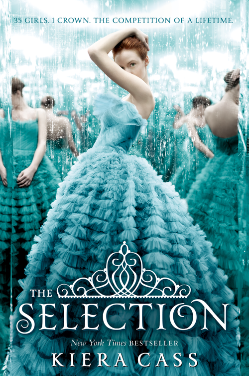
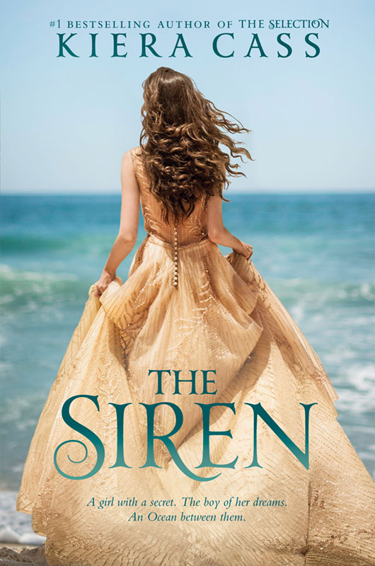

My Hometown
Kampong Cham
"A flowing Mekong River continue to find its destination, so does my life"
Kampong Rongcham describe a waiting port in Khmer Language. As time passed, the word shorten to Kampong Cham to be pronounced easier but the meaning remained.
Born on 12th August 2005, This Cambodia's southeastern land held many cherished memories of my childhood and the preseent as I continue to grow. The scenery along the river side remind the fresh wind I rode passed with my family that has become my favorite spot. The temple and mountains located in the area shows a dedication to the history the province held.
Besides the place, people living there matter the most to me. All of my four siblings, my lovely parents, other family members and close friends live in the area. They are the influence of my life, people I've spent fraction of my life with and the first I'll think about whether I was failing or celebrating my success.
Programming
As I joined serveral competitions related to programming, I started to take interest and enjoy learning different programming lanuages. At one point, I found myself enjoying every moments doing anythings related to it. Designing a user interface and experiences is the most adventurous letting me pour all of my creativity in. Currently, JavaScript with the JavaScript with the ability to make a web pages interactive and dynamic fashion is my favorite lanuge.
Reading
Every moments I spent with a book is consider to be the most peaceful time of mine. Vivid pictures of the life, emotions, love, regrets of the character in the book written in word are breathtaking. I prefer reading fantasy novel book series because it gives a long journey of the pleasure and suffering the character has been through. Apart from learning new vocabulary, it teaches me about life lesson, human's emotions, improved analytical thinking and walkiing toward a future with positivity and enthusiam.
Drawing
Both traditional and digital art are my hobbies and talents. They both provide a space for me to just be myself. I draw to released stress, relax, express emotions, tell stories through creativity. I started to draw since I was 5 years old. Over the years, I continue to expand my creactivity by drawing portraits of people, scenery, and imaginative objects. Somewhere along the line, I began to learn digital art by myself and this has been another journey of my artistic interest
As I continue to stumble among many interests, I can imagine following my passions. I can vision myself having my own studio to create different types of art delivering messages to create impacts in the community or a programmer who design platform to raise awareness in social topic to create a more acceptating society.
My Dream
My favorite books





“Reading is essential for those who seek to rise above the ordinary.” – Jim Rohn
Reading novel are way to ease my brain muscle and letting myself wonder in the world of fantasy. On my holiday, books are just like my friend that I spent hours and hours each day. The compelling jouney of each character are astonishing. The emotions that swelled in the character give a room for me to put my feeling someone else's shoe. Fantasy novel book are my favorite. Those series include the Healer, Poison study, Iron Fey, the Selection, Blood of Eden and more. My other favorite novel book that are not written to be series are the Siren, the Glass Castle, Awkward love story and many more.